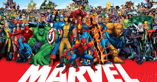
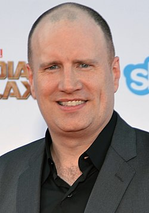

«Кіновсесвіт Marvel» скорочена назва «КВМ» (англ. Marvel Cinematic Universe, або MCU) — вигаданий всесвіт, серія супергеройськх фільмів та серіалів, які засновані на коміксах компанії Marvel і розроблені компанією Marvel Studios. Всесвіт було створено шляхом з'єднання в загальну сюжетну лінію декількох фільмів та серіалів зі спільними акторами та персонажами. Кіновсесвіт Marvel займає перше місце в списку найбільш прибуткових серій фільмів із загальними зборами понад $29 млрд, а картини «Месники: Завершення», «Месники: Війна нескінченності», «Месники» і «Месники: Ера Альтрона» посідають відповідно друге, п'яте, восьме й одинадцяте місця в списку найкасовішх фільмів за всю історію кінематографу. У кожному з фільмів або телесеріалів КВМ є відсилання один до одного, що в підсумку об'єднує їх в один всесвіт. Всі інші фільми й телесеріали, засновані на коміксах Marvel, ніяк не пов'язані з цією серією, оскільки зняті іншими компаніями та не мають загальної сюжетної лінії між собою, хоча всі ці герої з одного вигаданого всесвіту в коміксах.
У 2005 році журнал Variety повідомив, що Marvel Studios почне виробляти свої власні фільми та буде поширювати їх через Paramount Pictures. Раніше студія виступала лише в ролі копродюсерів в екранізаціях придуманих ними персонажів (найбільш відомий семирічний договір з 20th Century Fox). Доходи, отримані від даних угод, керівництво Marvel вирішує вкласти у власну узагальнену франшизу, процес створення якої буде повністю під контролем студії. З цією метою було укладено поновлюваний кредитний договір строком на 7 років з Merrill Lynch на суму $525 млн[4].—
Кевін Файгі-На прем'єрі
Вартових Галактики
— липень 2014 року
«Це одночасно і страшно, і весело. Це щось, чого ніхто ніколи раніше не робив, і саме завдяки цьому духу новизни всі з ентузіазмом приймають такий підхід. Інші режисери не звикли залучати вже ангажованих акторів з інших фільмів, робити прив'язки до певних сюжетних ліній або до місця, але я думаю … всі в підсумку погодилися на це і вважають, що це весело. В основному тому, що ми незмінно продовжуємо стверджувати: фільм, над яким ми працюємо зараз — понад усе. Всі наші „зв'язки“ — все це весело і також буде дуже важливим, якщо ви того захочете. Якщо шанувальники захочуть заглянути далі і побачити глибший зв'язок — він буде там. Є й кілька очевидних „зв'язків“, за якими, ми сподіваємося, зможе слідувати і основна аудиторія. Але … причина, по якій всі режисери погодилися брати участь в цій затії — в тому, що їхні фільми повинні бути конкурентоспроможними самі по собі. Їм потрібен свіжий погляд, унікальний тон, та той факт, що вони можуть бути пов'язані між собою, якщо глядач хоче йти по цих слідах з хлібних крихт — бонус»
Кевін Файгі,президент Marvel Studios,про структуру загального кіновсесвіту.
У проміжку з 2008 року і дотепер Marvel Studios випустили 33 фільми кіновсесвіту Marvel (Станом на 01.02.24). Усі вони поділяються на фази, наразі триває п'ята фаза. Перші три фази разом відомі як «Сага Нескінченності», а наступні три як «Сага Мультивсесвіту».
Перша фаза складається з фільмів «Залізна людина» (2008), «Неймовірний Халк» (2008), «Залізна людина 2» (2010), «Тор» (2011), «Перший месник» (2011) та кросовера «Месники» (2012).
Друга фаза включає кінокартини «Залізна людина 3» (2013), «Тор 2: Царство темряви» (2013), «Перший месник: Друга війна» (2014), «Вартові Галактики» (2014), «Месники: Ера Альтрона» (2015) та «Людина-мураха» (2015).
«Перший месник: Протистояння» (2016) став першим фільмом Третьої фази, за ним йшли «Доктор Стрендж» (2016), «Вартові Галактики 2» (2017), «Людина-павук: Повернення додому» (2017), «Тор: Раґнарок» (2017), «Чорна пантера» (2018), «Месники: Війна нескінченності» (2018), «Людина-мураха та Оса» (2018), «Капітан Марвел» (2019), «Месники: Завершення» (2019) та «Людина-павук: Далеко від дому» (2019)
У Четверту фазу входять фільми «Чорна вдова» (2021), «Шан-Чі та легенда десяти кілець» (2021), «Вічні» (2021), «Людина-павук: Додому шляху нема» (2021), «Доктор Стрендж у мультивсесвіті божевілля» (2022), «Тор: Любов і грім» (2022) та «Чорна пантера: Ваканда назавжди» (2022).
П'ята фаза починається з фільму «Людина-мураха та Оса: Квантоманія» (2023), за яким йдуть «Вартові Галактики 3» (2023), «Марвели» (2023), «Дедпул і Росомаха» (2024), «Капітан Америка: Чудесний новий світ» (2025) та «Громовержці*» (2025).
Шоста фаза почнеться з фільму «Фантастична четвірка: Перші кроки» (2025), до неї також увійдуть фільми «Блейд» (2025), «Месники: Судний день» (2026), «Людина-павук: Абсолютно новий день» (2026) та «Месники: Таємні війни» (2027)